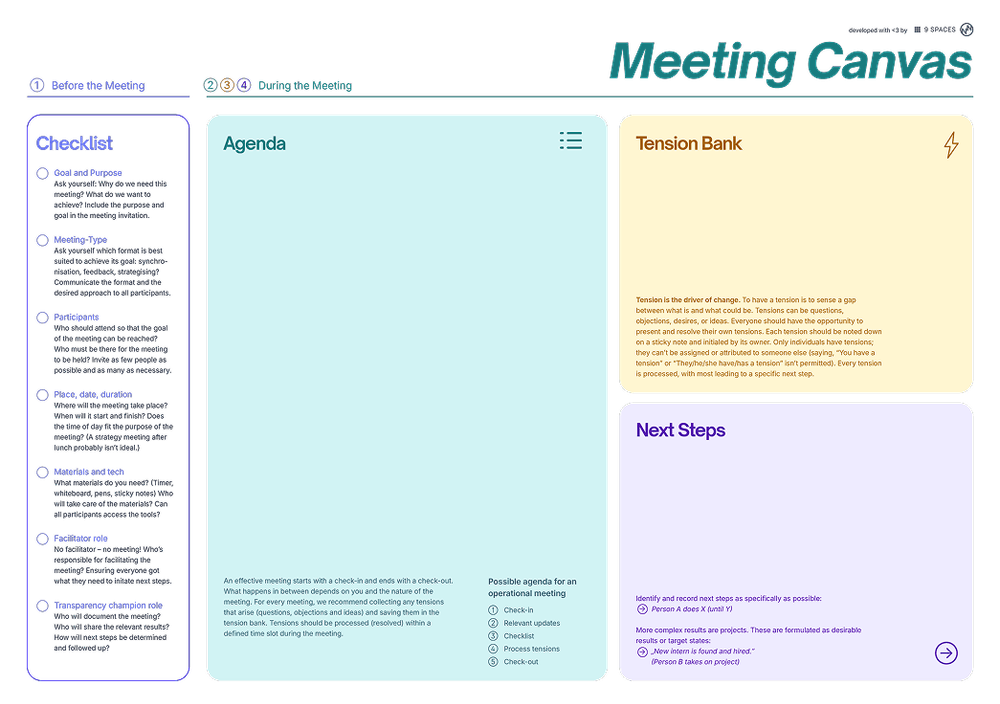

Many of Lufthansa Technik’s 4,500 employees were stuck in endless meetings. With 9 Spaces, they began building a more effective meeting culture.
Explore six non-awkward formats, methodsand exercises that help bring teams closer together.

A template to help you run effective, energising meetings.
Two mini habits that fundamentally change every workplace.
A team exercise that helps you determine how much time you spend in meetings – and what needs to change.
Set up a project with clear goals, roles, and parameters right from the start.